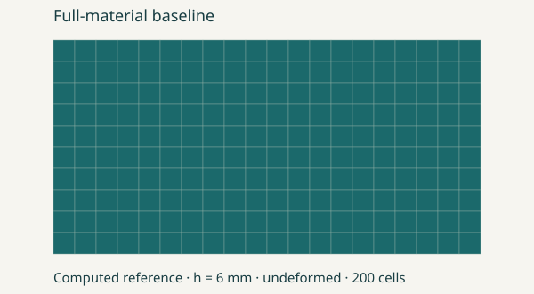
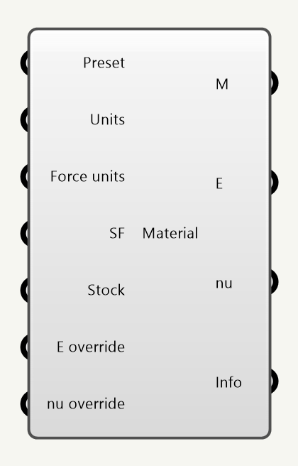

STEP BY STEP / 25 MINUTES
Run the first FEM analysis.
Does the calculated response agree with your prediction?
Run a full-material baseline, check equilibrium and distinguish numerical displacement from its display scale.

Files and starting point
Before starting: teaching archives contain the definition, not completed runtime jobs. Select the shared Rhino geometry where needed and run the required stages in order. Keep job folders in place for reports and case selection.
Build and observe
- Continue the supported/loaded plate from lesson 03, or use the starter. Set Boundary, Fixed edge and Load point from the same Rhino model if the parameters are empty.
- Keep h = 6 mm, a 100 N downward load and the left edge fixed. Do not change the geometry between stages of the comparison.
- Inspect TopOpt Material: steel Preset = 0, Length unit = 0 (mm), Force unit = 0 (N), Stock thickness = 2 mm. Its E output should be 210,000 N/mm² and nu = 0.30.
- Read Engineering Settings: Backend = 0 (CPU direct), Thickness = 2 mm, Volume = 0.40, Iterations = 80, Radius = 1.8 cells, Threshold = 0.40, Keep attachments = true. The baseline uses the full active domain; Volume controls the later optimisation.
- Connect Load L → Load Case Loads (L), name “Downward 100 N”, Weight = 1. This is the missing wire in the starter. One case contains the loads acting together.
- Trace Domain D, Support S, Load Case Case, Material M and Settings O into the corresponding inputs of the Engineering component labelled BASELINE. Confirm Mode = 0.
- Use a momentary RUN BASELINE button pulse, then wait for completed status. Opening the file does not start a solve. Do not repeatedly press Run while a job is active.
- Feed the baseline Result R to FEM Results. First use Field = 1 (displacement) and Scale = 0, then Scale = 1. Increase Scale for visibility, noting that this changes the drawing only.
- Read FEM Results Info and its U/Reac outputs. The maximum displacement should be about 0.009277 mm. Sum reaction vectors: total Y is approximately +100 N, balancing -100 N applied.
- Switch Field = 0 or 2 for von Mises stress. Record units and the legend maximum, not only the colour. Save the definition and note the job folder. Take the scheduled 10-minute break after this block.
Follow the data
| From | To / meaning |
|---|---|
| Load L | Load Case Loads L |
| Domain D / Support S | BASELINE D / S |
| Load Case Case | BASELINE Cases |
| Material M / Settings O | BASELINE M / O |
| Mode 0 + RUN button | BASELINE calculation |
| BASELINE Result R | FEM Results R |
Understand the result
For the teaching sequence we use Engineering, Mode 0 rather than the minimal FEM Analyze component. This keeps the baseline compatible with optimisation, final verification and Compare Results. FEM Results is still the 2D field viewer. The standalone FEM Analyze workflow is available in the reference but is not a substitute baseline for Compare Results.
The 2 mm stock declaration informs material reference screening; Settings Thickness defines the physical FEM thickness. Neither value changes the Rhino outline. Density is used for mass; gravity is absent in this introductory problem.
Reference: full-plate mass 0.113040 kg, maximum von Mises stress about 10.558 MPa at this grid. Peak stress has not been established as mesh-converged. This lesson does not set a project-specific acceptance limit.
Computed reference — introductory plate
120 × 60 × 2 mm; h = 6 mm; steel; 100 N downward; left edge fixed. This table records a Python-worker run of the declared model, not a classroom Rhino UI test.
| Stage | Mass (kg) | Maximum U (mm) | Maximum von Mises (MPa) |
|---|---|---|---|
| Full-material baseline | 0.1130400 | 0.0092775 | 10.557988 |
| Continuous-density design | 0.0452160 | 0.0466591 | relaxed design surrogate |
| Binary verification T = 0.40 | 0.0542592 | 0.0186599 | 20.314921 |
Inputs and numerical reference. Relaxed optimisation stress is deliberately not presented as a comparable full-material stress value.
Components in this lesson



These are native Grasshopper capsule renderings of the actual components, not screenshots of a running solve.
Checkpoint
- Completed full-material FEM, not an optimisation preview.
- Declared units mm and N; E = 210,000 N/mm², nu = 0.30, t = 2 mm.
- Displacement ≈ 0.009277 mm; total reaction Y ≈ +100 N.
- Scale changes display only; you can state one modelling assumption.